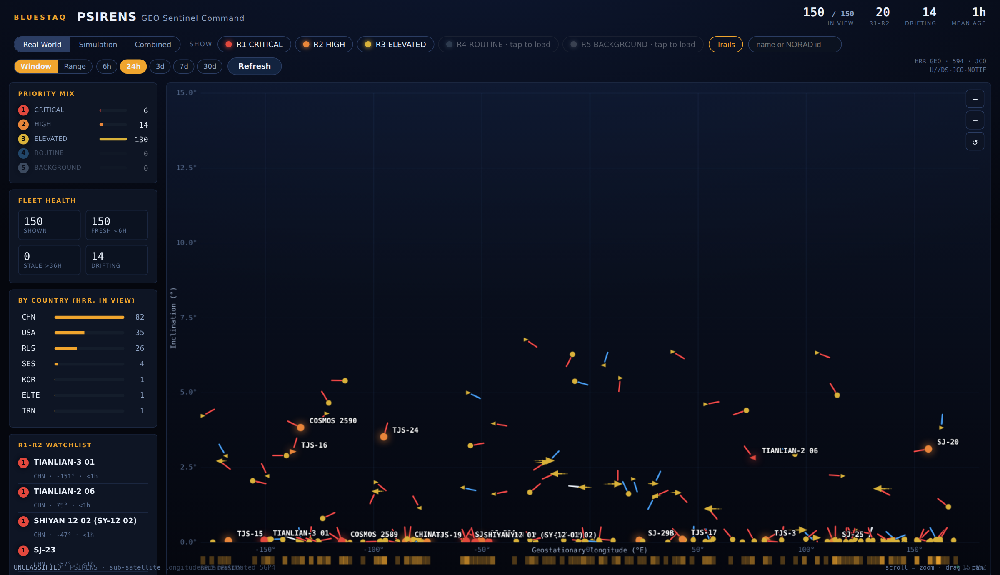
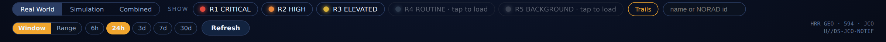
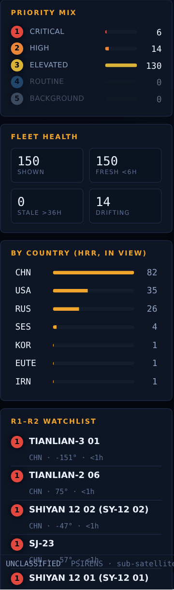
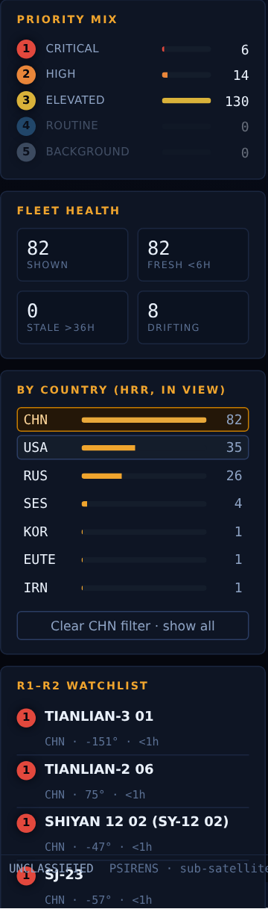
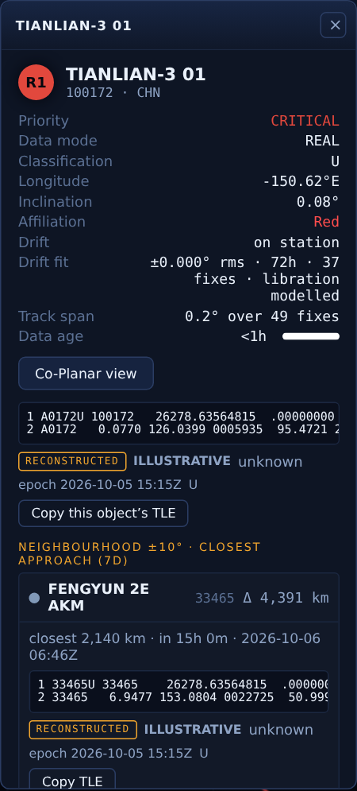
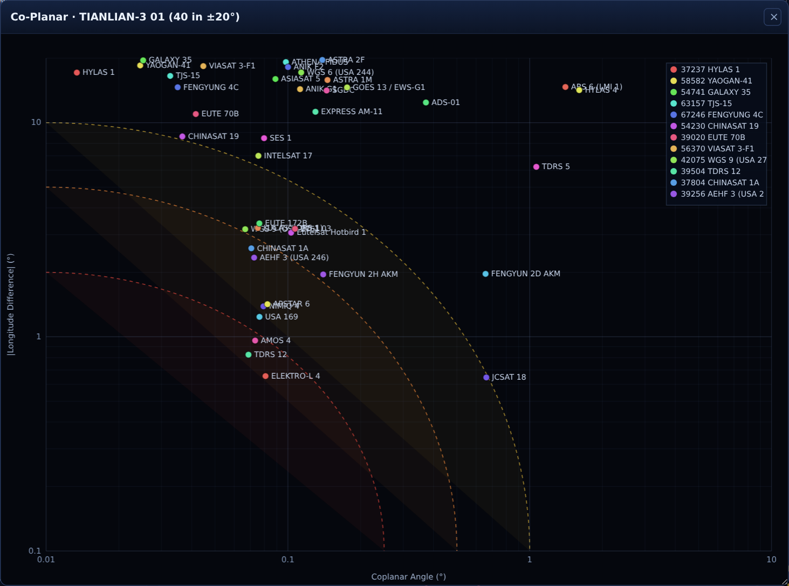
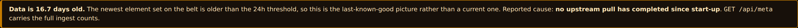

Start here
PSIRENS plots the geostationary belt as a single picture: where every high-interest object sits in longitude, how far its orbit is tilted, which way it is moving, and which way its orbital plane points. This guide takes about twenty minutes end to end, and every figure in it is a screenshot of the real interface.
1One plot, two numbers
Left to right is longitude over the Earth. Bottom to top is orbital inclination. Everything else on a marker is a modifier of those two.
2Colour is priority
Marker colour is the JCO high-interest rank, R1 to R5. It is never nationality. Nationality lives on the bearing needle.
3Click anything
A marker or a watchlist row opens the inspector: element set, drift fit, nearest neighbours with closest approach, and the co-planar chart.
The one-minute version
- Check the banner. If an amber bar sits under the title, the picture is older than 24 hours and the bar says why. Everything below it is last-known-good, not live.
- Read the belt. Objects near the bottom are station-kept. Objects higher up are inclined. Objects with an arrowhead are drifting, and the arrow points the way they go.
- Open the one that matters. Click its marker, or its row in the R1–R2 watchlist. Read Drift, Drift fit and the Neighbourhood list.
- Ask the geometry question. Press Co-Planar view. Anything in the bottom left of that chart shares your object's orbital plane and sits close to it in longitude.
The screen at a glance
Five regions, and they never move. Select a number to read what that region does.

Reading the belt
The plot is a map of the geostationary ring seen from above and flattened out.
Horizontal: sub-satellite longitude
From −180° (west) through 0° (the Greenwich meridian) to +180° (east). This is the point on the Earth's surface directly beneath the object, computed from the element set with a validated SGP4 propagator, not read from a field in the feed.
Vertical: orbital inclination
From 0° at the bottom to 15° at the top. A true geostationary satellite sits at 0° and stays over one longitude. Inclination builds up naturally if a satellite stops correcting it, at roughly 0.8° per year, so a high inclination often means an old or retired object — or one deliberately placed in an inclined orbit.
| What you see | What it usually means |
|---|---|
| Hugging the bottom edge | Actively station-kept. Operational, controlled, paying for fuel. |
| 1° to 5° up | Inclination no longer corrected. Often retired in place, or an inclined-orbit lease. |
| Above 5° | Long-uncorrected, or never geostationary to begin with. |
| A dense vertical cluster | A popular slot. Several operators sharing a longitude band. |
Zoom and pan
Anatomy of a marker
Every object draws the same four things. Move the controls and watch each one change: this canvas uses the same rules as the plot.
The dot, or the arrowhead
A circle while the object holds its longitude. Past 0.08°/day it becomes a triangle pointing the way it drifts, and grows with the rate.
Size and glow
R1 and R2 draw at 6 px with a coloured halo. R3 at 4.4 px. R4 and R5 at 3.4 px. Priority is readable before you read any colour.
The needle
A short line from the marker giving the orbital plane's RA bearing, and coloured by affiliation. North is straight up, angles run clockwise.
Fade
The marker dims as its element set ages, bottoming out at 72 hours. Names and needles have a brightness floor so they stay readable when the marker does not.
The sandbox live
A working belt you cannot break. Same drawing rules, same thresholds, same inspector fields as the real plot. Scrub time and watch the drifters move. Click anything.
Drills scored
Six tasks on the sandbox above. Read the task, scroll up, click the object you think it is. The sandbox scrolls into view when you start.
Priority: the HRR ranks
Colour means one thing only: how high the Joint Commercial Operations high interest list rates the object. It never means nationality, never means hostile.
| Rank | Name | Drawn as | Loaded |
|---|---|---|---|
| R1 | CRITICAL | 6 px with halo | On first paint |
| R2 | HIGH | 6 px with halo | On first paint |
| R3 | ELEVATED | 4.4 px | On first paint |
| R4 | ROUTINE | 3.4 px | On demand |
| R5 | BACKGROUND | 3.4 px | On demand |
The RA needle and affiliation
The needle answers a question the marker position cannot: which way does this object's orbital plane point, and whose object is it.
What the bearing means
An orbit's plane cuts the equator at a line. The right ascension of the ascending node, RAAN or RA, is the direction of that line. Two objects with the same inclination and the same RA are in the same plane, whatever their longitudes. That is why the needle is on the marker: two needles pointing the same way, close together on the plot, is the pattern worth a second look.
- Straight up is 0°. Angles increase clockwise, like a compass.
- The needle is absent when the object has no usable element set. That absence is information: there is no current orbit solution to draw.
Colour: affiliation
| Needle | Meaning | Set by |
|---|---|---|
| Red | The object's country is on the red list. | Operator policy, held in configuration as two country-code lists. Changing them never moves a marker. |
| Blue | The object's country is on the blue list. | |
| Other | Country known, on neither list. Most commercial and intergovernmental operators. | No claim made. |
| Unknown | The feed gave no country for this object. | A data gap, not a judgement. |
Drift, and why it is fitted
Drift is the rate the object's longitude is changing, in degrees per day. It is the single most operationally useful number on the panel, and the easiest to get wrong.
Reading it
| Panel reads | Meaning |
|---|---|
| on station | Under 0.05°/day. Holding its slot. |
| −1.20°/day W | Moving west at 1.2° a day. About 27 days to cross 30°. |
| +0.40°/day E | Moving east. A slow relocation, or an uncorrected orbit. |
| no usable baseline | Under 24 hours of fixes. The honest answer, not a zero. |
Why a fit and not a difference
A geostationary orbit with even slight eccentricity swings east and west once per sidereal day without going anywhere. At an eccentricity of 0.0022, that swing is 0.25° wide and reaches 1.58°/day at its fastest. Take two fixes thirty minutes apart and you divide by one forty-eighth of a day, so that swing — and any disagreement between two providers' element sets — is multiplied by 48. A perfectly stationary object can read several degrees a day.
So the rate is fitted by least squares over a trailing three-day window, and where the sampling is dense enough the fit includes a sine and cosine at the sidereal frequency, which removes the swing rather than averaging it.
The drift fit line
Beneath Drift the inspector shows the fit itself, for example
±0.004° rms · 72h · 37 fixes · libration modelled.
- rms is the scatter of the fixes about the fitted line. Small means a clean, trustworthy rate. Large means noisy inputs, or a manoeuvre partway through the span being fitted.
- Baseline and fix count say how much evidence the rate rests on.
- libration modelled means the once-a-day swing was fitted out. plain line means the fixes were too sparse to resolve it, so treat a small rate with more caution.
Trails and age
The faint tail behind each marker is the object's own history, drawn from the stored fixes. The brighter end is now.
- Trails in the control bar turns them off for a cleaner picture in a dense band.
- A trail segment implying faster than 18°/day of longitude motion is suppressed. No geostationary object moves that fast; such a segment is a mismatched historical element set, and drawing it would put a line straight across the belt.
- Marker brightness falls with the age of the newest fix and bottoms out at 72 hours. Fresh <6h and Stale >36h in Fleet health count the two ends.
The control bar
Everything that changes what is on screen, or asks the server for more.

Window against Range
| Mode | Asks for | Use it when |
|---|---|---|
| Window | The last 6h, 24h, 3d, 7d or 30d, ending now. | Routine work. Deepening the window fills in history for the trails. |
| Range | An explicit UTC start and stop. | Reconstructing a past event, or loading a scenario window that does not end now. |
The left rail
Four cards, all of them live, all of them scoped to what is currently in view.

By country is a filter, not just a readout
Click a country to show only its objects. The plot, the summary readouts, Fleet health and the watchlist all follow. Click it again, or use the clear control, to restore.

The inspector
Click a marker or a watchlist row. The panel is draggable; closing it leaves the plot exactly as it was.

Field by field
| Field | What it tells you |
|---|---|
| Priority | The HRR rank in words. Matches the marker colour. |
| Data mode | REAL, SIMULATED, EXERCISE or TEST. Anything but REAL draws hollow. |
| Classification | The marking carried by this object's own record, not a page-level default. |
| Longitude | Sub-satellite longitude at the newest fix. |
| Inclination | Orbital inclination at the newest fix. |
| Affiliation | Red, Blue, Other or Unknown. The same value that colours the needle. |
| Drift | The fitted longitude rate, with direction, or “on station”. |
| Drift fit | Scatter, baseline, fix count, and whether the libration was modelled. |
| Track span | Total longitude excursion across every stored fix. The sanity check on Drift. |
| Data age | Age of the newest fix, with a bar. Under an hour is a healthy feed. |
| Element set | The two-line element, with a provenance badge and the epoch it was issued for. |
| Neighbourhood | Everything within ±10°, with current range and the closest approach over seven days. |
Provenance and copy-out
- NATIVE means the provider's own two lines, stored verbatim and validated on arrival: correct shape, both checksums, and the catalogue number inside the line matched against the record's own. Nothing between the provider and you reformatted it.
- RECONSTRUCTED means no usable native pair existed, so the lines were rebuilt from the stored mean elements. Labelled, never silent.
- The element set shown is the one actually propagated for the closest-approach figures, so the line you copy produces the range you were shown.
- The copy control appears only for a plain unclassified, caveat-free marking. A proprietary commercial line is displayed with the control withheld and the reason given. That gate fails closed on any caveat.
The Co-Planar view
The question this chart answers: is anything sharing my object's orbital plane and sitting close to it in longitude. That combination is the co-orbital and rendezvous geometry an operator watches for.

How to read it
- Horizontal: coplanar angle, the mutual tilt between the two orbital planes. Small means the planes agree.
- Vertical: longitude difference, how far apart they sit around the belt.
- Both axes are logarithmic. The objects that matter cluster within a degree of zero, and a linear axis piles them all against the origin where you cannot tell them apart.
- Bottom left is the corner that matters. Same plane, same longitude.
The modal is draggable and resizable, and redraws as you resize it. It closes with the object panel; closing the chart alone leaves the panel open.
Data freshness
The most dangerous failure in a picture like this is not an error message. It is a plausible, well-drawn, out-of-date belt. PSIRENS says so out loud.

What to do when you see it
- Read the stated cause. “Upstream requests are failing” with a status code is an access problem. “Records arrived but none matched the high-interest list” is a filtering problem. “No upstream pull has completed” means the service has not managed a cycle since it started.
- Press Refresh with a 24h window selected. If the banner clears, it was transient.
- If it does not clear, the picture is still correct as last known good. Say so explicitly in any report you write from it, with the age.
- Escalate with the age and the cause, not just “it looks old”.
Views, simulation and classification
The three views
| View | Shows | Use it for |
|---|---|---|
| Real World | REAL objects only, scoped to the high-interest list. | Everything operational. |
| Simulation | SIMULATED objects only. Zero real objects, guaranteed. | Exercise and scenario work, with no chance of mixing the two. |
| Combined | Both at once. | Comparing an injected scenario against the live belt. |
- Non-real objects draw hollow, so you can always tell at a glance.
- A simulation pull is not filtered against the high-interest list and never prunes real objects, so a scenario cannot quietly erase the live picture.
Classification
The banner at the foot of the screen shows the most restrictive marking present among the objects currently loaded, not a fixed label. Individual objects carry their own marking in the inspector. Treat the foot banner as the floor for anything you export or screenshot.
Playbooks
Four things an operator actually does, start to finish.
Is anything closing on my satellite?
- Type the name or NORAD number into the search box.
- Click the marker, or its watchlist row, to open the inspector.
- Read Neighbourhood ±10°. Rows are ordered by current range; each gives the closest approach over the next seven days and when.
- Open Co-Planar view. A neighbour that is close in range and sits bottom-left on the chart is in the same plane, which is the geometry that matters.
- Copy the element set if the marking allows it, and hand on the epoch with it.
Which objects of one country are drifting?
- Click the country in By country. Everything narrows to it.
- Read Drifting in Fleet health: that is the count above 0.3°/day in the current view.
- Look for arrowheads on the plot, and open each to confirm from the drift fit rather than from the arrow alone.
- Clear the country filter when you are done, or every later reading stays narrowed.
Reconstruct what the belt looked like last Tuesday
- Switch the selector to Range.
- Enter the UTC start and stop. Both are UTC; there is no local-time conversion.
- Press Refresh and wait: a wide window is pulled in slices on purpose.
- Check Data age on any object to confirm the window landed where you intended.
The plot is empty
- Check the rank chips. R4 and R5 are off until asked for.
- Check the country filter. A selected country persists until cleared.
- Check the search box. A leftover filter string hides everything that does not match.
- Check the view tab. Simulation shows nothing when no scenario is loaded.
- Then check the banner. If the feed is dry the overlay says so rather than leaving you to guess.
Check yourself
Twelve questions, drawn in a different order each time. They are the things that most often get misread on a real panel.
Glossary
| Term | Meaning |
|---|---|
| Coplanar angle | The mutual tilt between two orbital planes. Zero means the same plane. |
| Drift | Rate of change of sub-satellite longitude, degrees per day, fitted over a trailing three-day span of fixes. |
| Element set, elset | The mean orbital elements for one object at one epoch. The input to every number here. |
| Epoch | The instant an element set describes. Not the time it was received. |
| GEO | Geostationary orbit, about 35,786 km up, one revolution per sidereal day. |
| HRR | High Rate Reporting: the JCO high-interest object list that scopes the real-world picture. |
| Inclination | Tilt of the orbital plane against the equator, in degrees. |
| JCO | Joint Commercial Operations, the source of the high-interest list. |
| Libration | The once-per-sidereal-day east-west swing caused by orbital eccentricity. Not drift. |
| RA, RAAN | Right ascension of the ascending node: which way the orbital plane points. |
| RPO | Rendezvous and proximity operations: deliberate close approach between two objects. |
| SGP4 | The standard propagator used to turn an element set into a position. |
| Sidereal day | 23h 56m 04s, one rotation of the Earth against the stars. The orbital period at GEO. |
| Sub-satellite longitude | The longitude directly beneath the object. |
| TCA | Time of closest approach. |
| TLE | Two-line element set, the standard text form of an element set. |
| UDL | Unified Data Library, the source of the element sets. |
Reference card
Thresholds the interface uses
| Value | Where it shows |
|---|---|
| 0.05°/day | Below this the inspector reads “on station”. |
| 0.08°/day | Above this the marker becomes a drift arrowhead. |
| 0.3°/day | Counted in the Drifting readout. |
| 18°/day | Trail segments above this are suppressed as data artifacts. |
| 24h | Minimum baseline for a drift fit, and the staleness threshold. |
| 3 days | Trailing window the drift rate is fitted over. |
| 6h / 36h / 72h | Fresh, Stale, and the point the age fade bottoms out. |
| ±10° | Neighbourhood half-width in the inspector. |
| ±20° | Half-width of the co-planar neighbourhood. |
| 0.05° / 0.01° | Deepest zoom, in longitude and inclination. |
If you are asked for evidence
The live service reports its own state. GET /api/meta gives the running version,
the age of the newest fix, whether it is considered stale, and the ingest counts behind that
verdict, including how many upstream requests were made and how many failed. Quote those rather
than describing the screen.